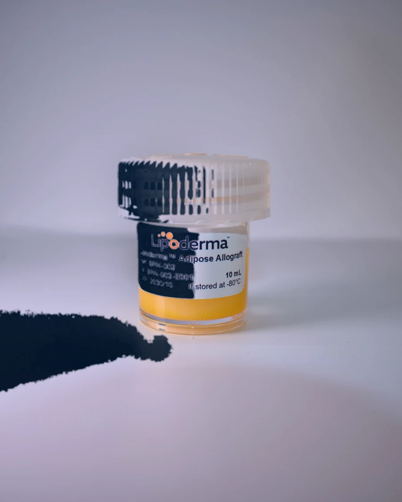
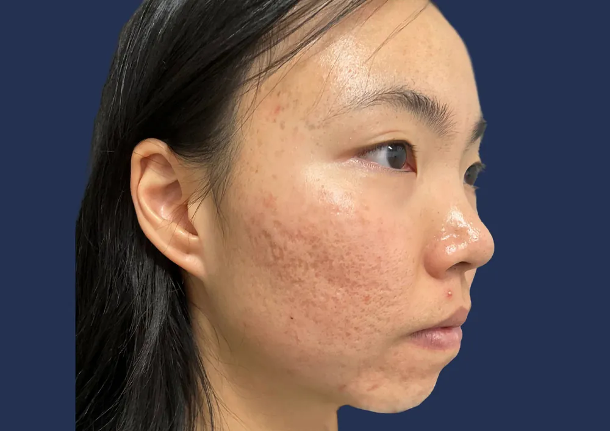
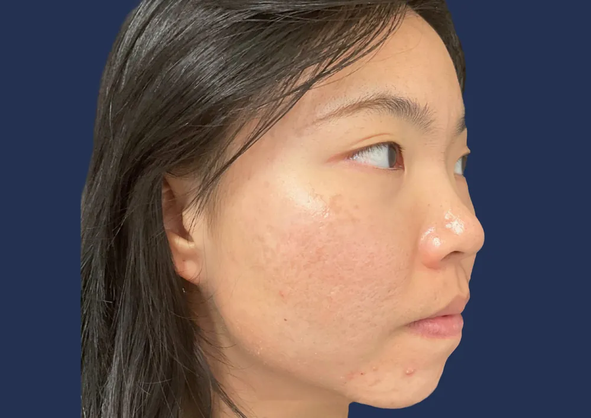

Lipoderma® by Britecyte
The fat worth keeping.
For decades, fat has been something we've been encouraged to lose, reduce, or eliminate. But fat also has a structural role in the face — it holds the contours, the softness, the thing that makes a face read as yours.
The reframe
Fat is not filler.
It's structure.
Fat sits in a continuous layer beneath the skin. In the face it gives shape to a cheek, a temple, the transition from brow to eye. It is the reason a face casts the shadow it does in three-quarter light.
When that layer thins, the face doesn't simply lose volume. It loses the transitions that make it recognizable as itself — hollows under the eyes, a softened jawline, a tiredness that has nothing to do with sleep.
That is the fat worth keeping.
Anatomy
The layer under everything
A face is a stack of layers.
One of them does the shaping.
Skin on top. Muscle and bone beneath. Between them, a layer of fat that holds the shape of everything above it.
Age and weight loss
take that layer first.
It thins, and the skin loses what it was resting on. The surface follows: hollows where there was curve, and a finer, less even texture.
Lipoderma is that tissue.
Donated and left whole.
Human adipose tissue, processed to remove what the immune system reacts to and nothing else. The fat cells and the structure around them arrive intact.
Placed where it was lost.
Through a cannula, into the layer beneath the skin. Volume is there right away because it is real tissue, not a stand-in for it. The skin above has something to rest on again.
Then your body takes over.
In studies, the body's own cells move in and gradually replace the donor tissue with tissue that is theirs. The initial fullness settles into a natural contour.
Illustrative. Based on Danilkovitch et al., 2026 and Chernoff, 2026.
Anatomy · detailed version
The layer under everything
A face is a stack of layers.
One of them does the shaping.
Skin on top. Muscle and bone beneath. Between them, a layer of fat that holds the shape of everything above it.
Age and weight loss
take that layer first.
It thins, and the skin loses what it was resting on. The surface follows: hollows where there was curve, and a finer, less even texture.
Refined, not rebuilt.
Donated fat arrives with blood cells and immune cells that would be rejected. Washing and processing remove them. The fat cells stay intact, so what triggers inflammation stays locked inside them.
Placed where it was lost.
Through a cannula, into the layer beneath the skin. The tissue goes in as real structure, cell by cell, exactly where the layer thinned.
Volume, right away.
The layer refills behind the cannula, and the skin above has something to rest on again.
Then your body takes over.
In studies, the body's own cells and new blood vessels move in and gradually replace the donor tissue with tissue that is theirs. The initial fullness settles into a natural contour.
Illustrative. Based on Danilkovitch et al., 2026 and Chernoff, 2026. Detailed variant for review.

10 mL · Adipose allograftThe product
Lipoderma.
Donated human adipose tissue, processed to keep its native structure and prepared for minimally invasive delivery.
Lipoderma is placed by licensed physicians into the face, neck, and hands to restore lost support and volume. It is supplied as a stored allograft, so the procedure doesn't depend on harvesting fat from somewhere else on the patient's body.
-
01
Like-for-like
Adipose tissue restoring adipose tissue. Not a gel, not a spacer, not a volume that sits outside the architecture.
-
02
Ready when it's needed
An off-the-shelf allograft means no donor-site harvest and no graft attrition between harvest and placement.
-
03
Native architecture preserved
Processing preserves intact adipocytes and the extracellular matrix that holds them in place.
-
04
Placed by physicians only
Delivered through standard cannulas or needles, and available only through a select network of licensed providers.
Individual results vary. Lipoderma is available only through licensed physicians. Talk with your provider about whether it's appropriate for you.
Who it's for
One product.
Three conversations.
The same tissue means something different depending on where you're standing.
You don't want a different face.
You want yours back.
Weight loss, age, and time change the fat layer before they change anything else. If the person in the mirror looks tired, or older, or simply less like you — that gap is usually structural, not superficial.
- Facial hollowing after weight loss, including GLP-1–assisted loss
- Under-eyes, temples, and midface
- Hands that read older than the face
An alternative to harvesting.
For appropriate smaller-volume applications — primarily facial rejuvenation, neck, and hands — Lipoderma offers an off-the-shelf adipose allograft. No donor site, no harvest morbidity, no attrition between harvest and placement.
- Native adipose architecture preserved through processing
- Delivery through standard cannulas or needles
- Clinical evidence, IFU, and handling guidance in the provider portal
A new category next to fillers and collagen.
Lipoderma isn't positioned against what you already offer. It adds an adipose tissue option for patients who want structural restoration rather than added volume — and a conversation your team can lead.
- Differentiated from filler and collagen-stimulating treatments
- Targeted facial rejuvenation, neck, and hands
- Patient education materials built for the consult room
Outcomes
A result should read
as itself.
The best aesthetic outcome doesn't announce the treatment. It closes the gap between how someone looks and how they feel — and then stops there.


Before AfterDrag to compare. Individual results vary. Photography courtesy of the treating physician.
"I didn't want to look like I'd had something done. I wanted the mirror to catch up with how I actually felt."
Patient, midface restoration
View the outcomes galleryAccess
A select network,
by design.
Lipoderma is placed only by licensed physicians trained on the product. Search by name, city, state, or ZIP to find one near you.
Questions
Questions,
welcome.
If something here isn't answered, the best next conversation is with a provider.
Lipoderma is a human adipose allograft — donated fat tissue that has been screened, processed to preserve its native structure, and prepared for placement with a cannula or needle. It is used to restore lost support and volume in the face, neck, and hands.
Fillers are engineered materials that add volume. Lipoderma is adipose tissue, which is what the face is built from in the first place. The distinction matters because the goal is restoring the layer, not occupying space inside it. Ask your provider which approach fits your face and your goals.
No. Lipoderma is donated human adipose tissue from carefully screened donors, processed in an FDA-registered tissue establishment in accordance with applicable regulations for human tissue products. It is not harvested from your body.
Rapid weight loss can reduce the fat that supports the face, contributing to hollowing, sagging, and changes in contour. That's a structural change, and it's the kind Lipoderma is designed to address. Whether it's right for you is a conversation for your provider.
Lipoderma is made from screened donor tissue and processed in an FDA-registered tissue establishment. As with any aesthetic procedure, your provider will discuss potential risks and determine whether Lipoderma is appropriate for you.
Lipoderma is an elective aesthetic product and is self-pay. Pricing is set by your provider based on your individual treatment plan.
Use the provider finder above to search by name, city, state, or ZIP. Every listed practice is licensed and trained on Lipoderma.
Some things are worth holding on to.
The way you see yourself is one.
Start with a provider who can tell you whether Lipoderma is right for your face — and what it would actually take.